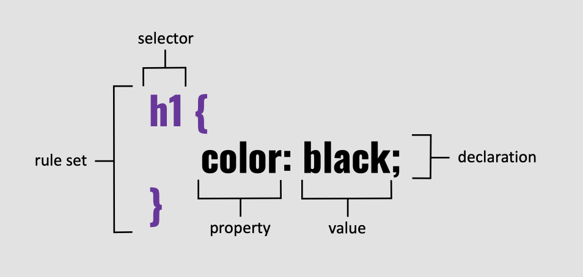

CSS Syntax
A CSS rule consists of a selector and a declaration block, where properties are styled.
Elements
- Rule set: Composed of a selector and one/many delcarations surrounded by curly braces.
- Selector: Identifies which HTML element should be targeted for styling.
- Declaration: Assigns a value to a property, separated by a colon. Each declaration must end with a semi-colon.
- Property: The type of design you want to add, such as color, width, background color, border, etc.
- Value: Accepted value for the assigned property, such as blue, 30px, 50%, etc.